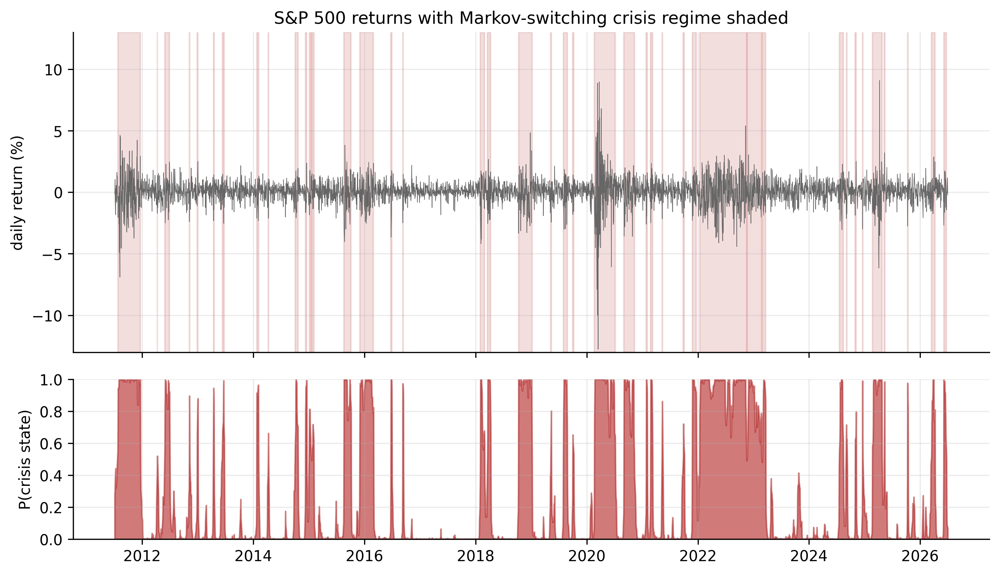

14 Nonlinear Models
Every mean model so far has been linear: the same rule maps the past into a forecast, no matter what the market is doing. Nonlinear models drop that assumption — they let the dynamics change with the state of the world. Two ideas dominate: threshold models, where the rule switches when an observed variable crosses a line, and Markov-switching models, where the rule switches between hidden “regimes” the market moves among on its own.
Before diving in, an honest word about what to expect on our data, because it shapes everything. We already know daily returns are almost unforecastable in the mean. So we should not expect a nonlinear mean model to find much either. What our returns have in abundance is nonlinearity in the variance — the volatility clustering GARCH captured. The most valuable nonlinear model here will therefore be the one that speaks to regimes of volatility: Markov switching. Let us test for nonlinearity first, then meet both models honestly.
14.1 Are returns nonlinear? Testing first
A linear model with a fixed variance implies the residuals are pure noise — not just uncorrelated, but with no structure of any kind. Nonlinearity shows up when some function of the past predicts the present even though the past itself does not. The simplest and most telling test is McLeod–Li: a Ljung–Box test applied to the squared returns. Squares carry no information about direction, so if they are autocorrelated, the series is nonlinear.
The key is to run it twice — once on the raw returns, and once on the GARCH standardised residuals — because the difference tells us where the nonlinearity lives.
library(tseries) # bds.test; FinTS::ArchTest for the ARCH-LM form
est_return <- function(sym) {
d <- read.csv(sprintf("data/%s.csv", sym)); d$Date <- as.Date(d$Date)
diff(log(d$Adjusted[d$Date <= as.Date("2026-07-01")]))
}
r <- est_return("SPX")
Box.test(r^2, lag = 12, type = "Ljung-Box") # McLeod-Li on raw returns
# ... then fit a GARCH and repeat on its standardized residuals:
z <- as.numeric(residuals(rugarch::ugarchfit(
rugarch::ugarchspec(variance.model = list(garchOrder = c(1,1)),
mean.model = list(armaOrder = c(0,0))), r), standardize = TRUE))
Box.test(z^2, lag = 12, type = "Ljung-Box") # McLeod-Li on GARCH residualsimport pandas as pd, numpy as np
from statsmodels.stats.diagnostic import acorr_ljungbox
from arch import arch_model
def est_return(sym):
d = pd.read_csv(f"data/{sym}.csv", parse_dates=["Date"]).set_index("Date")
return np.log(d[d.index <= "2026-07-01"]["Adjusted"]).diff().dropna()
r = est_return("SPX")
print(acorr_ljungbox(r**2, lags=[12])) # raw returns
z = arch_model(r*100, vol="GARCH", p=1, q=1).fit(disp="off").std_resid
print(acorr_ljungbox(z**2, lags=[12])) # GARCH residuals| Ticker | McLeod–Li on raw returns | McLeod–Li on GARCH residuals |
|---|---|---|
| AAPL | 892 | 4.3 |
| MSFT | 1,272 | 7.1 |
| AMZN | 140 | 7.2 |
| SPX | 4,121 | 15.6 |
| GLD | 530 | 10.2 |
| GCF | 316 | 10.2 |
Table 14.1 tells the whole story. On the raw returns the statistic is enormous for every series — hundreds to thousands, against a threshold of \(21\) — so returns are emphatically nonlinear. But on the GARCH standardised residuals the statistic collapses below the threshold for every series (4 to 16). In other words, once GARCH has removed the volatility clustering, essentially no nonlinearity is left. The nonlinearity in returns is almost entirely conditional heteroskedasticity — it lives in the variance, which we have already modelled. This is the crucial finding that frames the rest of the chapter: threshold and switching models applied to the mean will find slim pickings, while a switching model of the variance will find a great deal.
14.2 Threshold autoregressive (TAR) models
A threshold autoregressive (TAR) model switches between different AR dynamics depending on whether an observed past value crosses a fixed threshold.
A threshold autoregressive model lets the AR coefficients switch depending on whether a past value sits above or below a threshold \(\gamma\). The two-regime SETAR (self-exciting TAR) with one lag is
\[ r_t = \begin{cases} c_1 + \phi_1\, r_{t-1} + a_t, & r_{t-d} \le \gamma \quad(\text{"lower" regime}),\\[4pt] c_2 + \phi_2\, r_{t-1} + a_t, & r_{t-d} > \gamma \quad(\text{"upper" regime}), \end{cases} \tag{14.1}\]
where \(d\) is the delay. “Self-exciting” means the switch is triggered by the series’ own past (\(r_{t-d}\)), not an outside variable. Estimation is a grid search: try each candidate threshold, fit a plain regression in each regime, and keep the \(\gamma\) that minimises the total squared error.
Fitting a two-regime SETAR to the S&P 500 (threshold on the previous day’s return) turns up a small but real effect: the estimated threshold is \(\gamma = 0.79\%\), and the two regimes differ.
- After an ordinary or down day (\(r_{t-1} \le 0.79\%\)): \(c=0.03\%\), \(\hat\phi_1 = -0.11\) — the mild mean-reversion we already knew.
- After a big up day (\(r_{t-1} > 0.79\%\)): \(c=0.57\%\), \(\hat\phi_1 = -0.41\) — markedly stronger mean-reversion. A large gain tends to be given back faster than a small move.
The SETAR beats the linear AR(1) on BIC (\(-34{,}096\) vs \(-34{,}077\)), so the threshold effect is statistically real. But keep it in proportion, consistent with Table 14.1: it is a small refinement of an already-tiny mean signal, explaining a sliver more of a series whose mean is mostly unpredictable. TAR is a valuable idea — and indispensable for series with genuine regime-dependent means, like some macro and interest-rate data — but for daily equity returns it is a minor character.
library(tsDyn)
setar_fit <- setar(est_return("SPX"), m = 1, thDelay = 0) # 2-regime SETAR(1)
summary(setar_fit) # thresholds + regime coefficients# No first-class SETAR in statsmodels; a direct grid search over the threshold:
r = est_return("SPX").values; y, x = r[1:], r[:-1]
best = None
for g in np.quantile(x, np.linspace(0.15, 0.85, 71)):
lo = x <= g
sse = sum(((y[m] - np.polyval(np.polyfit(x[m], y[m], 1), x[m]))**2).sum()
for m in (lo, ~lo))
best = min(best or (1e18, g), (sse, g))
print("threshold =", best[1])14.3 Markov-switching models
A Markov-switching model assumes the series moves between a few hidden regimes (e.g. calm vs crisis); we infer the probability of each regime from the data.
The Markov-switching model takes a different view: instead of a switch you can see (a threshold on a past value), the market moves between hidden regimes on its own, and we infer which regime it is in from the data. With two states,
\[ r_t \mid S_t = k \;\sim\; N(\mu_k,\, \sigma_k^2), \qquad P(S_t = k \mid S_{t-1} = j) = p_{jk}, \tag{14.2}\]
where \(S_t \in \{1, 2\}\) is the unobserved state and the \(p_{jk}\) form a transition matrix. The state follows a Markov chain — where it goes next depends only on where it is now. We estimate the regime means, variances, and transition probabilities by maximum likelihood (the Hamilton filter), and the model returns, for every day, the probability that the market was in each regime — the smoothed regime probabilities.
On daily returns the two states it finds are unmistakable: a calm state and a crisis state, differing overwhelmingly in volatility (the two means are both near zero — echoing Table 14.1, the regimes are about variance). Figure 14.1 plots the S&P 500 with the crisis regime shaded, and the model dates the market’s storms on its own: the 2011 euro crisis, the 2015–16 and late-2018 selloffs, the 2020 COVID crash (where the crisis probability pins to 1), and the 2022 bear market.

Fitting the two-state model to every series shows how differently the six behave:
| Ticker | calm vol | crisis vol | avg calm spell | avg crisis spell | time in crisis |
|---|---|---|---|---|---|
| AAPL | 18.5% | 46.8% | 18 d | 6 d | 25% |
| MSFT | 17.0% | 43.6% | 23 d | 8 d | 25% |
| AMZN | 21.4% | 53.7% | 31 d | 11 d | 26% |
| SPX | 10.0% | 28.6% | 51 d | 20 d | 28% |
| GLD | 12.4% | 29.0% | 68 d | 16 d | 19% |
| GCF | 12.8% | 30.9% | 56 d | 11 d | 17% |
Read Table 14.2 across. Every series splits into a calm regime and a crisis regime with roughly \(2.5\)–\(3\times\) the volatility (the S&P’s \(10\%\) vs \(29\%\) is the starkest). The regimes are persistent — a calm spell averages weeks to months, a crisis spell one to four weeks — which is why the average duration column matters: it is \(1/(1-p_{kk})\), the expected number of days the chain stays put. And the character differs by asset: gold spends the least time in crisis (\(17\)–\(19\%\) vs the equities’ \(25\)–\(28\%\)) and has the longest calm spells, the quantitative version of its reputation as the steadier asset. The individual stocks flip regimes fastest.
library(MSwM) # or depmixS4
lm0 <- lm(est_return("SPX") ~ 1)
ms <- msmFit(lm0, k = 2, sw = c(TRUE, TRUE)) # 2 regimes, switching mean & variance
summary(ms); plotProb(ms, which = 1) # smoothed regime probabilitiesfrom statsmodels.tsa.regime_switching.markov_regression import MarkovRegression
mod = MarkovRegression(est_return("SPX"), k_regimes=2, switching_variance=True)
res = mod.fit()
print(res.summary())
res.smoothed_marginal_probabilities[1].plot() # P(crisis regime) over timeThis is, in effect, a discrete-regime alternative to GARCH. Both describe time-varying volatility; GARCH lets it drift smoothly, while Markov switching snaps between a small number of distinct states. For our data they agree on the substance — volatility is the story — and the switching model adds one interpretable extra: a clean, dated answer to “is the market in a calm or a crisis regime right now?”
14.4 Forecasting with nonlinear models
Forecasting from these models follows the regimes.
For a SETAR, the one-step forecast uses whichever regime yesterday’s return puts you in — after a big up day, the stronger mean-reversion; otherwise the mild one. Multi-step forecasts require simulation, because tomorrow’s regime depends on tomorrow’s (unknown) return; but as with every mean model we have seen, the forecast quickly settles near the overall average.
For a Markov-switching model the forecast is a blend weighted by regime probability. Given today’s regime probabilities, the \(h\)-day-ahead probabilities are obtained by pushing them through the transition matrix \(h\) times, and the forecast volatility is the probability-weighted average of the calm and crisis volatilities. As the horizon grows, the regime probabilities converge to the chain’s long-run (ergodic) split — for the S&P, about \(72\%\) calm and \(28\%\) crisis — so the volatility forecast mean-reverts to the long-run blend, just as the GARCH forecast reverted to its unconditional level.
The honest bottom line matches every chapter before it. The mean forecast is still a near-flat line at the average — both regimes have means close to zero, so knowing the regime barely moves the expected return. What the regime does tell you is the risk: the single most useful output of the switching model is today’s crisis probability, which says whether to forecast calm or turbulent conditions ahead. Nonlinear models, like the volatility models before them, pay off not by predicting direction but by sharpening the picture of risk.
14.5 Putting the toolkit together: a forecast for each ticker
This is where the whole book converges. For each of our six series we now produce a single, honest forecast that combines everything we have learned — the (flat) mean model and the GARCH(1,1) with Student-\(t\) tails for the volatility — in two panels:
- Top — the return forecast. A nearly flat point forecast at the series’ average, wrapped in an adaptive 95% band whose width comes from the GARCH volatility forecast and the fat-tailed \(t\) quantile. The band starts at today’s conditional volatility and fans toward the long-run width. Black squares are the actual July holdout returns.
- Bottom — the volatility forecast. The recent fitted conditional volatility (grey) and its forecast (blue) mean-reverting to the series’ long-run level (green dashed).
Step through the six with the arrows or dots.
The panels differ only in their starting volatility state on 1 July 2026 — the one thing a good model conditions on. Entering July, most series were elevated (conditional volatility above the long-run level, so the forecast decays back down), while the S&P 500 and Amazon were calm (below the long-run level, rising toward it).
| Ticker | start state | 1-day-ahead vol | long-run vol | band behaviour |
|---|---|---|---|---|
| AAPL | elevated | 2.25% (36%/yr) | 1.79% (28%/yr) | wide, narrowing |
| MSFT | elevated | 2.49% (40%/yr) | 1.69% (27%/yr) | wide, narrowing |
| AMZN | calm | 2.21% (35%/yr) | 2.27% (36%/yr) | roughly steady |
| SPX | calm | 0.84% (13%/yr) | 1.05% (17%/yr) | narrow, widening |
| GLD | elevated | 1.55% (25%/yr) | 1.09% (17%/yr) | wide, narrowing |
| GCF | elevated | 1.62% (26%/yr) | 1.12% (18%/yr) | wide, narrowing |
Three things hold across all six, and they are the summary of the whole book:
- The mean forecast is a flat line at the average. Nothing we built could predict the direction of daily returns, and the honest forecast says so — the actual holdout returns scatter around the flat line with no pattern the model claimed to see.
- The uncertainty is where the model earns its keep. The 95% band is drawn from today’s volatility and reverts to the long-run level, so it is tight for the calm S&P and wide for elevated Apple and Microsoft — and fattened by the Student-\(t\) tails for honest coverage. That adaptive band is the practical deliverable.
- Everything reverts. Both the return and the volatility forecast pull back toward the long-run average as the horizon lengthens; today’s conditions matter for weeks (the persistence of volatility) but not forever.
The forecasting story, told six times over, is the same each time: do not bet on the direction of returns; forecast their risk, and forecast it conditionally on where volatility is today.
14.6 Concept check
Decide first, then expand each answer.
Q1. The McLeod–Li statistic is huge on raw returns but small on GARCH standardised residuals. This means:
- (a) the returns are linear.
- (b) returns are nonlinear, but the nonlinearity is volatility clustering — it lives in the variance, and GARCH already removed it.
- (c) GARCH failed.
- (d) the mean model is wrong.
(b). Squared returns are autocorrelated (nonlinear) until GARCH standardises them; the leftover is near zero, so the nonlinearity was conditional heteroskedasticity, not mean structure.
Q2. In a two-regime SETAR, the switch between regimes is triggered by:
- (a) a hidden random state.
- (b) an observed past value of the series crossing a threshold \(\gamma\).
- (c) the calendar.
- (d) the forecast horizon.
(b). SETAR switches on an observed lag (\(r_{t-d}\) vs \(\gamma\)) — “self-exciting.” Contrast Markov switching, where the state is hidden.
Q3. In a Markov-switching model, the regimes are:
- (a) observed directly in the data.
- (b) hidden states inferred from the data, with Markov transition probabilities between them.
- (c) set by a fixed threshold.
- (d) the same as ARMA lags.
(b). You never see the state; you infer the probability of each regime each day and estimate the transition probabilities \(p_{jk}\).
Q4. A regime has stay-probability \(p_{kk} = 0.95\). Its expected duration is:
- (a) 0.95 days.
- (b) \(1/(1-0.95) = 20\) days.
- (c) 5 days.
- (d) infinite.
(b). Expected duration is \(1/(1-p_{kk})\); a \(0.95\) stay-probability means the regime lasts about 20 trading days on average.
Q5. For our returns, the most useful output of a Markov-switching model is:
- (a) an accurate forecast of tomorrow’s return direction.
- (b) the crisis-regime probability, which sharpens the volatility/risk outlook — since both regime means are near zero, the mean forecast stays flat.
- (c) the trend.
- (d) the unit root.
(b). Both regimes have near-zero means, so knowing the regime barely changes the expected return; it changes the expected risk. The regime probability is the payoff.
- Returns are nonlinear, but Table 14.1 shows the nonlinearity is almost all volatility clustering: it vanishes from GARCH standardised residuals, so little is left for nonlinear mean models.
- A TAR/SETAR model switches AR dynamics at an observed threshold (Equation 14.1); for the S&P it finds a small real effect (stronger mean-reversion after big up days) — genuine but minor for daily returns.
- A Markov-switching model (Equation 14.2) infers hidden regimes; on our data it cleanly separates a calm and a crisis volatility state (\(2.5\)–\(3\times\) the vol), dates every major storm automatically (Figure 14.1), and quantifies regime persistence and duration (Table 14.2). It is a discrete-regime alternative to GARCH.
- Forecasts revert to the long-run regime blend; as always, the mean stays near flat while the regime probability delivers the useful, risk-focused signal.